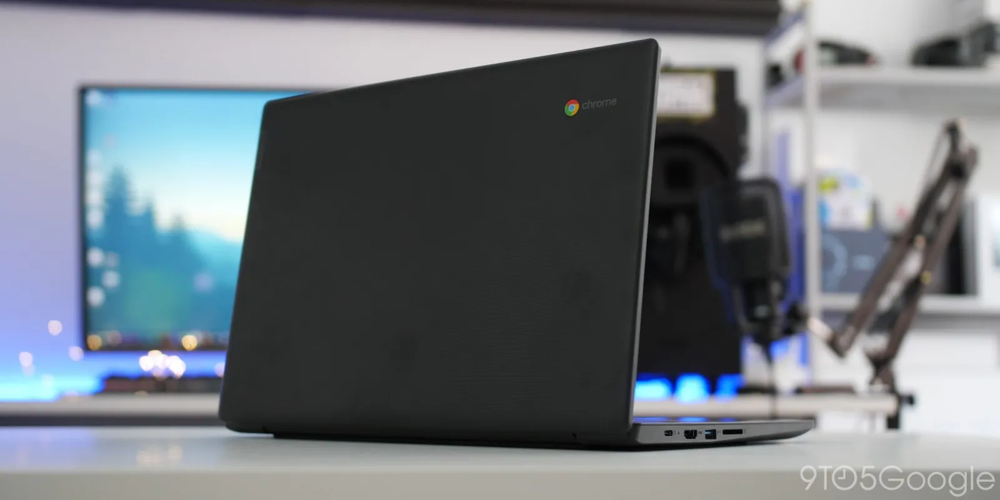
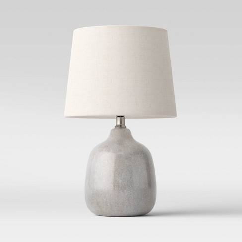
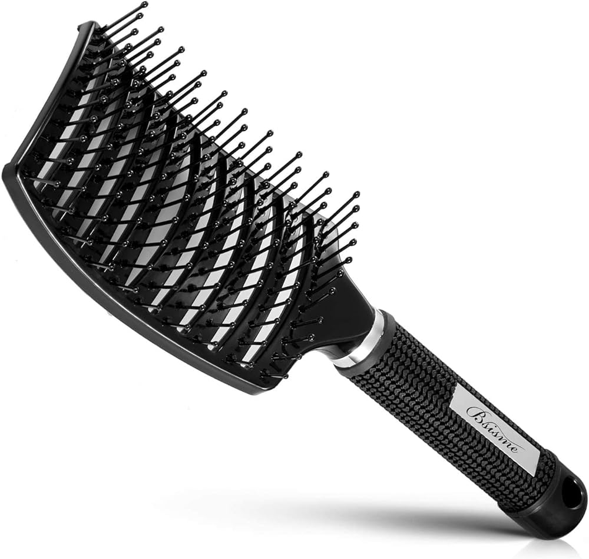

Case Study Between Google Lens and Mobilenet
Google Lens
VERSUS
Mobilenet
Test image 1-
Output on google lens - Book
Output on mobilenet - Packet
Result -
Google lens is more accurate
Text image 2-

Output on google lens - Chromebook
Output on mobilenet - Loudspeaker
Result -
Google lens is more accurate
Text image 3-
Output on google lens - Pillow
Output on mobilenet - Paper towel
Result -
Google lens is more accurate
Text image 4-

Output on google lens - Lamp
Output on mobilenet - Microphone
Result -
Google lens is more accurate
Text image 5-

Output on google lens - Hairbrush
Output on mobilenet - Bannister
Result -
Google lens is more accurate
I tested 5 images